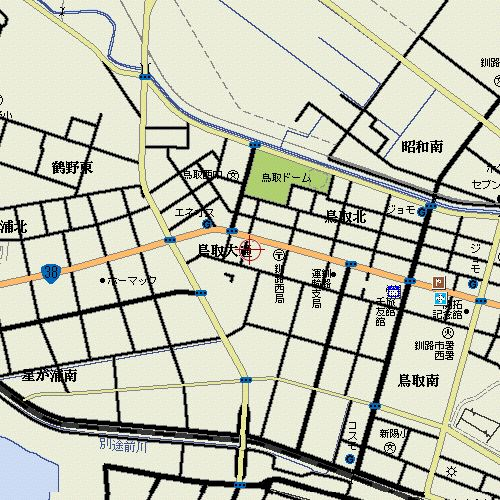
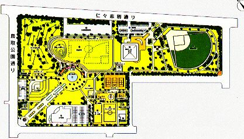
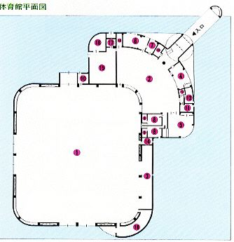
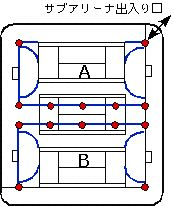
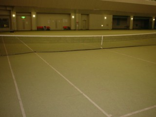
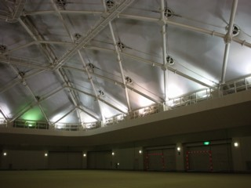
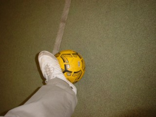
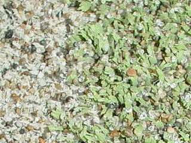

エコカップ2004釧路は終了しました。
みなさんのご協力ですばらしい大会になりました。
実行委員会よりお礼申し上げます。
優勝（決勝勝者）：フィールドノート
準優勝（決勝敗者）：京都パープルパンダ
3位（3位決定戦勝者）：FCふせいん
4位（3位決定戦敗者）：男闘呼峠
5位（予選2位交流戦勝者）：ハエジャコ改
6位（予選2位交流戦敗者）：vermin@420
7位（予選3位交流戦勝者）：Sparta TOEF
8位（予選3位交流戦敗者）：札幌ヒール
全試合結果
予選リーグ
| A組 | TOEF | 京都 | vermin | 水昆 | Classics |
| Sparta TOEF | 0-0 | 1●3 | 3○0.5 | 9○0.5 | |
| 京都パープルパンダ | 0-0 | 1○0 | 3○0.5 | 4○0 | |
| vermin@420 | 3○1 | 0●1 | 3○0 | 4○0 | |
| 日本水昆部 | 0.5●3 | 0.5●3 | 0●3 | 3.5○0.5 | |
| Sapporo Classics | 0.5●9 | 0●4 | 0●4 | 0.5●3.5 |
| B組 | フィー | 札幌 | ハエ | ボブ | いも |
| フィールドノート | 2○0 | 3○0 | 2.5○0 | 4○1 | |
| 札幌ヒール | 0●2 | 0●1 | 1●1.5 | 5○1 | |
| ハエジャコ改 | 0●3 | 1○0 | 1.5○0 | 3○1 | |
| FC.ボブ | 0●2.5 | 1.5○1 | 0●1.5 | 0●1 | |
| いもっこす | 1●4 | 1●5 | 1●3 | 1○0 |
| C組 | ブラン | 男闘呼 | コンサ | う岐阜 | ふせ |
| ブランメル生態U46 | 0●3 | 1○0 | 0●1.5 | 0●3 | |
| 男闘呼峠 | 3○0 | 3○0 | 2○0 | 0-0 | |
| コンサベーレ東山 | 0●1 | 0●3 | 2○0 | 0●2 | |
| う 岐阜 | 1.5○0 | 0●2 | 0●2 | 0●2 | |
| FCふせいん | 3○0 | 0-0 | 2○0 | 2○0 |
予選3位交流戦：Sparta TOEF 2 - 0 札幌ヒール
予選2位交流戦：ハエジャコ改 2 (3 PK 1) 2 vermin@420
準決勝：フィールドノート 5 - 1 FCふせいん
準決勝：京都パープルパンダ 1 (4 PK 3) 1 男闘呼峠
3位決定戦：FCふせいん 3 - 2 男闘呼峠
決勝：フィールドノート 3 - 2 京都パープルパンダ
個人成績（ゴール数）
8ゴール
松尾 洋（フィールドノート）
6ゴール
中村 亮二（フィールドノート）、大塚 康徳（vermin@420）
5ゴール
島田 豊（男闘呼峠）、中村 智（vermin@420）、日名 哲嗣（Sparta TOEF）
4ゴール
鈴木 正人（フィールドノート）、田中 健太（Sparta TOEF）、中原 立喜（札幌ヒール）
3ゴール
河村 耕史、安岡 宏和（京都パープルパンダ）、杉本 太郎（FCふせいん）
2ゴール以下省略
女性による唯一のゴール
片野 泉（日本水昆部）
会計報告
| 収入 | 単価（円） | 数量 | 合計（円） | 備考 |
| チーム参加費 | 5,000 | 15 | 75,000 | |
| 傷害保険料 | 300 | 123 | 36,900 |
| 支出 | 単価（円） | 数量 | 合計（円） | 備考 |
| 会場費 | 46,160 | 1 | 46,160 | 鳥取ドーム(1) |
| トラック借上げ料 | 10,000 | 1 | 10,000 | ゴールの運搬 |
| ラインテープ | 2,520 | 2 | 5,040 | 200 m |
| 賞品代 | 10,000 | |||
| 雑費 | 3,800 | 救急用品、事務費など | ||
| 傷害保険料 | 300 | 123 | 36,900 | 東京海上(2) |
(1)の内容
メインアリーナ(12:00〜18:00)： 5,880×6hr=35,280（税込み）
準備・片付け（各1hr）： 2,940×2hr= 5,880
夜間照明： 840×1hr= 840
研修室(11:00〜19:00）： 520×8hr= 4,160
合計：46,160円
(2)の内容
傷害保険（レク）でフットサルは危険度が高いC区分の料率に該当
300円/人で、死亡・後遺障害が345万円、
入院が4500円/日、通院が3000円/日の保障内容
The 51st Annual Meeting of the Ecological Society of Japan
第51回日本生態学会
サテライト企画
親善フットサル大会：エコカップ2004
Ecocup 2004 in Kushiro
A futsal championship by the members of Ecological Society of Japan
企画＆主催：エコカップ2004実行委員会
エコカップ2004開催のご挨拶
ついにエコカップが日本フットサル発祥の地、北海道にやってきました。
エコカップが末永く続くために、イベント指向から競技指向へ、
実行委員会の負担を減らすような運営を目指しておりますので、ご理解をお願いします。
今年は、遠隔地の狭い会場での開催となりご不便をおかけしますが、
前回までと同様に熱い戦いが繰り広げられることを期待しています。
エコカップ2004実行委員会
永光輝義・宇野裕之・山本昭範・神山塁・照井滋晴・中川泰輔・横田寛樹
ご協力いただいたオフィシャルの方々
永光（森林総研・Sapporo Classics）、荒木さん（森林総研・京都パープルパンダ）、
河村さん（京都パープルパンダ）、中村さん（vermin@420）、松尾さん（フィールドノート）、
村上さん、田中さん、宮田さん、中村さん、日名さん（Sparta TOEF）、
小関さん、玉手さん（札幌ヒール）
大会概要
開催日時：2004年8月25日（水曜日）12:00から17:30まで
開催場所： 釧路市コミュニティ体育館鳥取ドーム
鳥取北7-4-1（鳥取10号公園内）電話0154-53-5125参加費：1チームあたり5000円／保険料：1人あたり300円
チーム代表者の方がチームでまとめて上記の金額を当日受付に支払って下さい。準備経過
1月下旬：会場探し大会進行
11:00-12:00 準備会場への交通手段
釧路空港からバス
阿寒バス 釧路空港から釧路駅前・MOO行が飛行機到着から15〜20分後に出発します。乗車約40分。 鳥取分岐または西郵便局で下車。徒歩10分。JR釧路駅・釧路市街からバス
くしろバス 釧路駅前から(36)白糠線が毎時00分と30分に出発します。 (37) 新野線と(38) 大楽毛線もご利用できます。乗車約20分。 西郵便局または鳥取分岐で下車。徒歩10分。国道38号線から自動車

会場の案内
鳥取10号公園
鳥取ドームの周辺は公園になっています。 一般の方の迷惑にならないように自由にご利用ください。

コート：2面、36 * 18 m、天井高さ15 m、砂入り人工芝（スパイク不可）





大会運営
試合とチームの表（pdfファイル）
試合予定表
予選対戦表
決勝対戦表
チーム表
予選リーグ
3つ(A, B, C)の組に分かれ予選リーグを行います。 試合時間8分、試合間隔は2分です。決勝トーナメント
予選リーグを勝ち上がった上位4チームで、準決勝、決勝と3位決定戦を行います。 決勝トーナメントは前後半各7分、ハーフタイム2分、試合間隔は4分です。 前後半で決しない場合はPK戦を行い勝敗を決定します。交流試合
予選2位の2チームどうし、予選3位選抜の2チームどうしで、2つの交流試合を行います。 交流試合は、前後半各7分、ハーフタイム2分、試合間隔は4分です。 前後半で決しない場合はPK戦を行い勝敗を決定します。審判
試合には主審と副審がつきます。競技規則
日本サッカー協会フットサル競技規則 に従います。（サッカーと違う）おもなルール
特別ルール
表彰
優勝、準優勝、3位、予選2位交流試合勝者、予選3位交流試合勝者のチームには賞品があります。 また、大会を通じて得点王に輝いた方、特別賞としてもっとも活躍された女性の方にも賞品を出します。打ち上げ
8月25日の20:00より くしろ港町ビール本店 （地ビール飲み放題）で、 会費一人学生:3500円、職持ち:4000円以上（カンパよろしく）です。2004 August 30 updated by [Index]